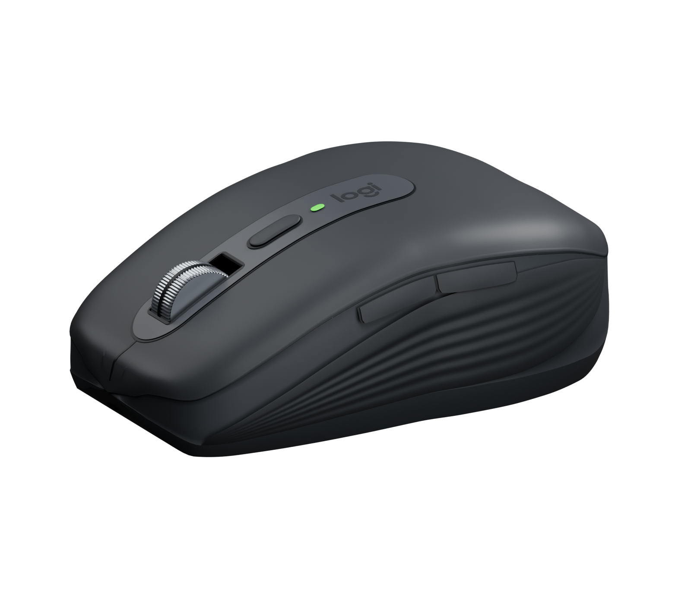
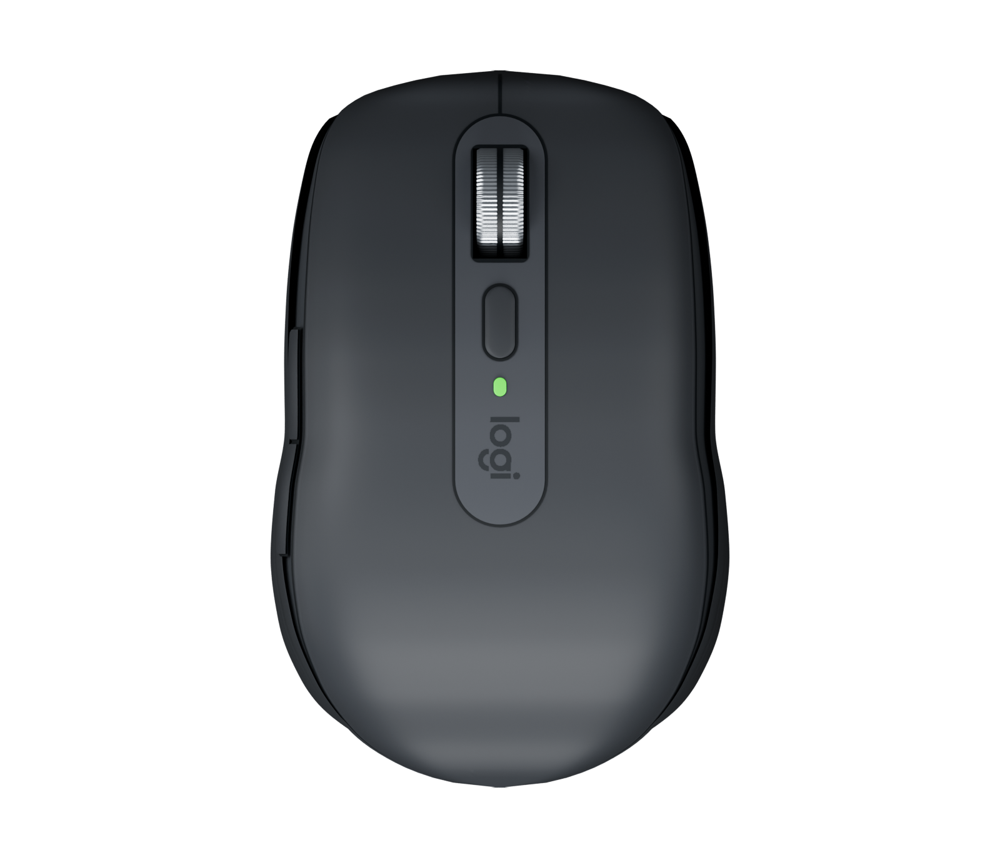
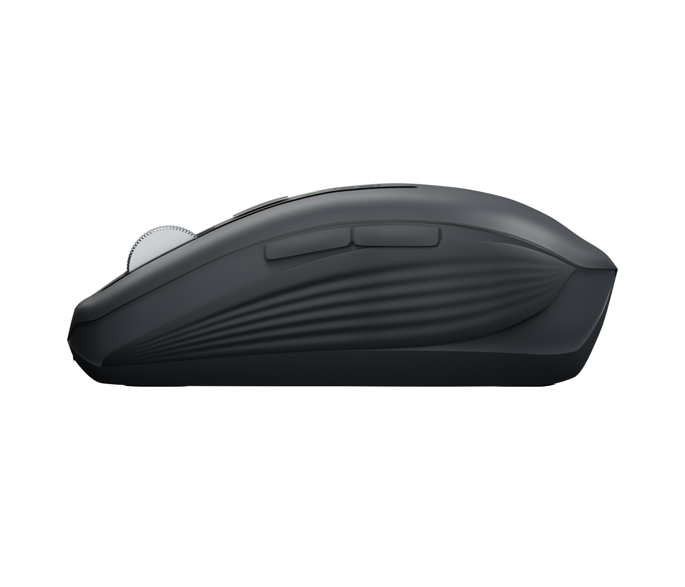
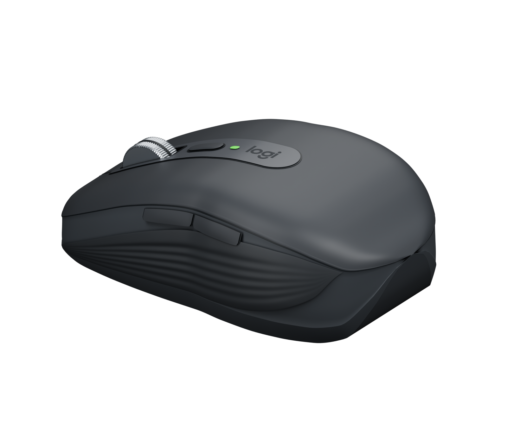

MX Anywhere 3S
Your four product images alongside the reconstructed 3D model. Lighting and perspective differ slightly between the original images and the rendered mesh.
 Reference · Front
Reference · Front
3D model · Front
 Reference · Top
Reference · Top
3D model · Top
 Reference · Side
Reference · Side
3D model · Side
 Reference · Back
Reference · Back
3D model · Back